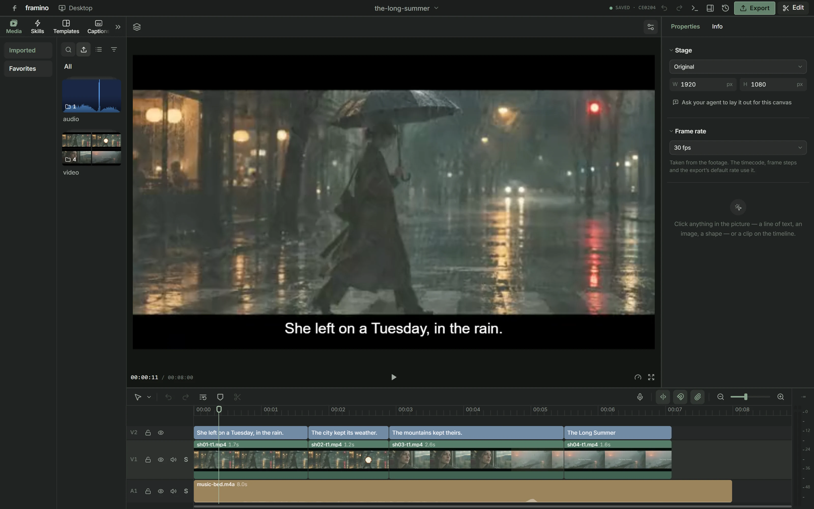
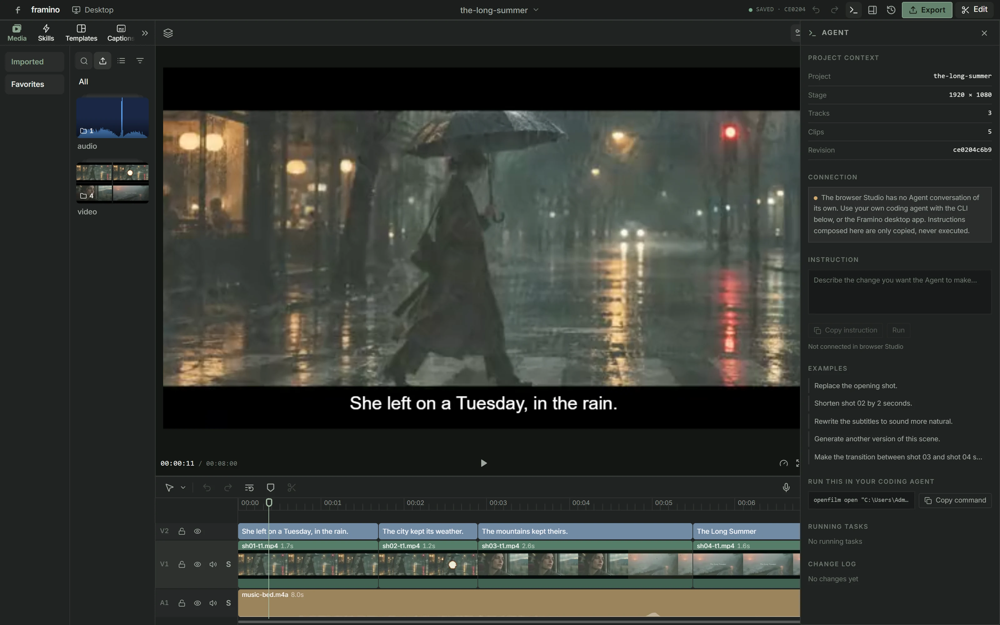

Your agent writes the film. You keep the cut.
Framino turns a brief into a finished video — script, storyboard, generated shots, captions and audio — with your AI agent doing the production work. Then you step into a professional editor to refine every frame. You approve what gets made, and the final cut is always yours.

Ready to edit. The sample project below, opened in Framino Studio — 4 shots, 3 tracks, captions and a music bed, every clip ready to change.
AI video tools give you an MP4. Framino gives you the whole project.
Describe what you want to make. Framino plans the script and storyboard, generates each shot with the model you choose, gathers and checks the media, then assembles a finished project — ready to open in the editor. You approve the plan before anything is generated.
Every shot stays independent, so you can regenerate one without touching the rest. Nothing is overwritten, an interrupted run resumes instead of charging you twice, and your edits are saved as you work. Automation that leaves you in charge.
The Long Summer — a finished title sequence, ready to edit.
Four shots, two scenes, captions and a music bed, delivered as one Framino project. Each shot is its own clip with its own timing and subtitle, so you can swap a shot, rewrite a caption or re-time the cut without starting over. What you see here is the actual project opened in Studio.
The Long Summer
Fully editable

What's inside every project
What stays under your control
Every change is saved as you make it. Hand the project back to your agent tomorrow, or export it now — it is always exactly where you left it.
Your agent and your editor, always on the same page.
Delegate the production. Your coding agent writes the script, plans the shots and builds the project.
Keep the final say. You review, refine and approve in Studio.
The workspace shows the live state of your project — tracks, clips, captions and revision — plus a clear record of every change: film writes, exports, files and history. Your agent's edits and yours land in the same project, so neither overwrites the other.

Always up to date. 1920 × 1080 · 3 tracks · 5 clips — read live from the project, so what you see is what your agent sees.

Captions stay in sync with your shots. Each caption is timed to the exact frame its shot begins — no manual re-timing.
Everything you need to finish the cut, already included.
Text styles, effects, motion presets, transitions, stickers, sound effects, templates and colour filters all ship with Framino — no extra packs to buy, no marketplace to browse. Everything lives in your project, so the work stays yours.
Up and running in a few minutes.
Framino runs on your machine, so there is no account to create and nothing to upload. The first render downloads a headless browser (~100 MB); after that, preview and export use the same engine — what you see is what you get.
$ git clone https://github.com/aircrushin/Framino $ cd Framino $ corepack enable $ pnpm install $ pnpm dev # Studio on 127.0.0.1:4848
$ openfilm open "/path/to/project" # your project opens in Studio $ openfilm look # inspect the project $ openfilm render # export the MP4 $ openfilm get video # media, shot by shot $ openfilm skills # built-in skills & assets
Make more video. Keep the final cut.
Most AI video tools hand you an MP4 and call it done. Framino hands you a complete, editable project you can keep improving — with your agent, by hand, or both. Start with a brief; finish with something worth publishing.